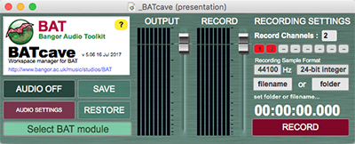
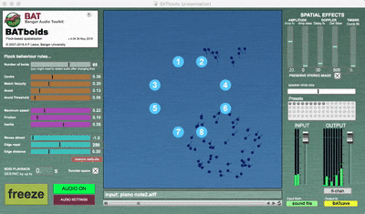
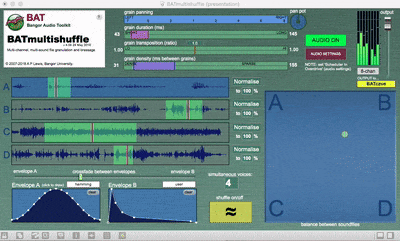
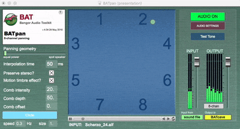
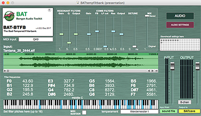
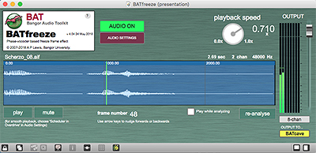
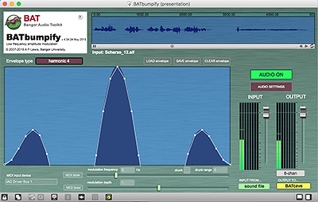
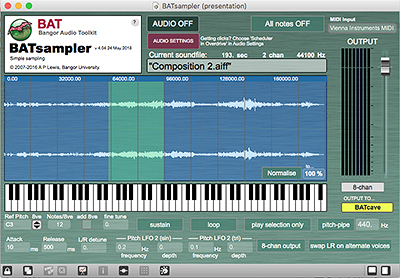
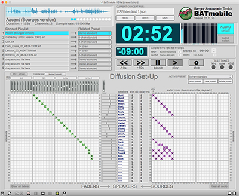

A modular system for sound processing and transformation, made with
Max. Modules can be used as stand-alone processes, or connected
together to create more complex transformations. It is available as a
Max 8 package.
DOWNLOAD
THE LATEST VERSION HERE (v4.2026.05)

The control centre for BAT, allowing complex set-ups to be saved as workspaces and instantly recalled. (BATcave is not necessary in order to use BAT - all modules can be connected together on a peer-to-peer basis.)

A BAT module for spatialising sound in 8 channels using Craig Reynolds' 'boids' flocking algorithm.

A BAT module for brassage and granulation in 8 channels, offering interpolation between four simultaneous soundfiles, and between two different grain envelopes.

Quick and easy 8-channel panning tool, with motion timbre simulation and auto panning.

A BAT module for applying pitch-based resonant and comb filtering. Filter pitches can be set by MIDI input. Support is offered for Werkmeister and Pythagorean tuning systems, as well as for Equal Temperament.

Phase-vocoder freeze-frame effect, as used in 'Skyline'. Also includes variable speed playback.

Low frequency amplitude modulation, gives surface grain to smooth sounds.

Simple sampler with 8-channel output, microtonal scales, detuning and pitch modulation
A system for performing multi-channel sound works, making it possible to switch instantly between widely varying configurations during the course of a concert programme. Currently supports up to 32 channels of input and output, with instant recall of faders and output routing, and independent delay and gain for each loudspeaker.
